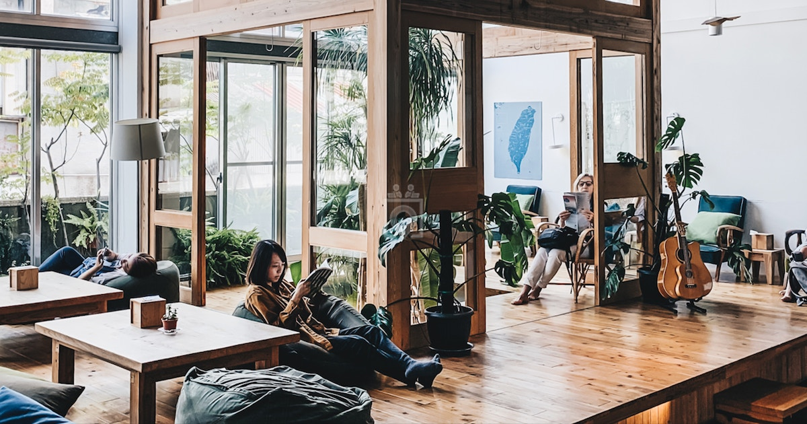

Introduction
Our team's innovative concept addresses the unique challenges faced by students like Hanna, a 44-year-old Finnish full-time student living outside Kouvola. Balancing studies, work and family, Hanna represents a demographic that is looking for affordable housing solutions while at the same time trying to find a harmonious balance in their lives. The aim of our solution is not only to improve the living conditions of existing students, but also to attract new students to Kouvola by offering a comprehensive and sustainable solution.
Concept overview
In cooperation with a local organisation, Kouvolan Asunnot, we propose to develop a three-storey building close to LUT University and XAMK University to meet the needs of both student communities.
Building structure
First Floor - Art Coffee Shop: A vibrant space for creative students to showcase their art. A welcoming environment for studying, group work and socialising. Job board for professionals to post job opportunities. Sponsored by TEK (the union for academic engineers and architects in Finland) and other potential sponsors. Reduced prices for students, normal prices for non-students. Information centre with computers, maps of local facilities and a room for rent negotiations. Employment opportunities for international students as baristas, managers and members of the cleaning team, addressing the lack of English-speaking employment opportunities in Kouvola. Second floor - Permanent student housing: Shared accommodation for 2-3 flatmates, encouraging communal living. Affordable monthly rents (around 250-300 euros/month). Primary source of income to support general building maintenance. Third floor - Bookable rooms: Small, affordable rooms with basic facilities for short stays (1-2 days). Booking through a user-friendly website/web application with secure entry options. Targeted at students, offering a cost-effective alternative to traditional hotel stays. Additional features: Bicycle rental facilities for students to explore the city at an affordable price. Virtual city guide accessible from the website with a map of attractions. Attraction pages with descriptions promoting Kouvola and LUT University. QR codes at attractions directing people to the website for more information.
Financial sustainability
Sponsorship from potential sponsors. Income from permanent student accommodation to support occasional bookable rooms. Income from the Art Coffee Shop through sales and rental of the negotiation room.
Risks
Financial dependency: Securing sponsorship, especially from TEK, is key. Uncertain commitments pose a funding risk. Operational challenges: Running the Art Coffee Shop on a daily basis can be challenging and requires additional resources. Occupancy rates: Sustainability depends on high occupancy rates. A decline in demand could affect financial stability. Regulatory compliance: Strict compliance with local regulations is essential; non-compliance could lead to legal issues. Technology risks: Developing and maintaining the website, web application and digital travel guide involves technology risks such as glitches or cybersecurity threats.
Conclusion
Our innovative concept not only meets the housing needs of students like Hanna, but also contributes to the overall urban development of Kouvola. By providing affordable housing, creating community spaces and promoting local attractions, we believe our solution will attract new students and improve the overall student experience in Kouvola.